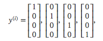

Neural Networks - 6 December, 2016
Tags: machine learning
Neural networks are limited imitations of how our own brains work. They've had a big recent resurgence because of advances in computer hardware.
In neural networks, we use the same logistic function as in classification: \(\frac{1}{1 + e^{-\theta^Tx}}\). In neural networks however we sometimes call it a sigmoid (logistic) activation function.
Visually, a simplistic representation looks like:
\[\begin{bmatrix}x_0 \newline x_1 \newline x_2 \newline x_3\end{bmatrix}\rightarrow\begin{bmatrix}a_1^{(2)} \newline a_2^{(2)} \newline a_3^{(2)} \newline \end{bmatrix}\rightarrow h_\theta(x)\]
The values for each of the "activation" nodes is obtained as follows:
\[\begin{align*}
a_1^{(2)} = g(\Theta_{10}^{(1)}x_0 + \Theta_{11}^{(1)}x_1 + \Theta_{12}^{(1)}x_2 + \Theta_{13}^{(1)}x_3) \newline
a_2^{(2)} = g(\Theta_{20}^{(1)}x_0 + \Theta_{21}^{(1)}x_1 + \Theta_{22}^{(1)}x_2 + \Theta_{23}^{(1)}x_3) \newline
a_3^{(2)} = g(\Theta_{30}^{(1)}x_0 + \Theta_{31}^{(1)}x_1 + \Theta_{32}^{(1)}x_2 + \Theta_{33}^{(1)}x_3) \newline
h_\Theta(x) = a_1^{(3)} = g(\Theta_{10}^{(2)}a_0^{(2)} + \Theta_{11}^{(2)}a_1^{(2)} + \Theta_{12}^{(2)}a_2^{(2)} + \Theta_{13}^{(2)}a_3^{(2)}) \newline
\end{align*}\]
Each layer gets its own matrix of weights, \(\Theta^{(j)}\).
The dimensions of these matrices of weights is determined as follows:
\[\text{If network has $s_j$ units in layer $j$ and $s_{j+1}$ units in layer $j+1$, then $\Theta^{(j)}$ will be of dimension $s_{j+1} \times (s_j + 1)$.}\]
Multiclass Classification
\[\begin{align*}\begin{bmatrix}x_0 \newline x_1 \newline x_2 \newline\cdots \newline x_n\end{bmatrix} \rightarrow\begin{bmatrix}a_0^{(2)} \newline a_1^{(2)} \newline a_2^{(2)} \newline\cdots\end{bmatrix} \rightarrow\begin{bmatrix}a_0^{(3)} \newline a_1^{(3)} \newline a_2^{(3)} \newline\cdots\end{bmatrix} \rightarrow \cdots \rightarrow\begin{bmatrix}h_\Theta(x)_1 \newline h_\Theta(x)_2 \newline h_\Theta(x)_3 \newline h_\Theta(x)_4 \newline\end{bmatrix} \rightarrow\end{align*}\]
We can define our set of resulting classes as y:

Our final value of our hypothesis for a set of inputs will be one of the elements in y.